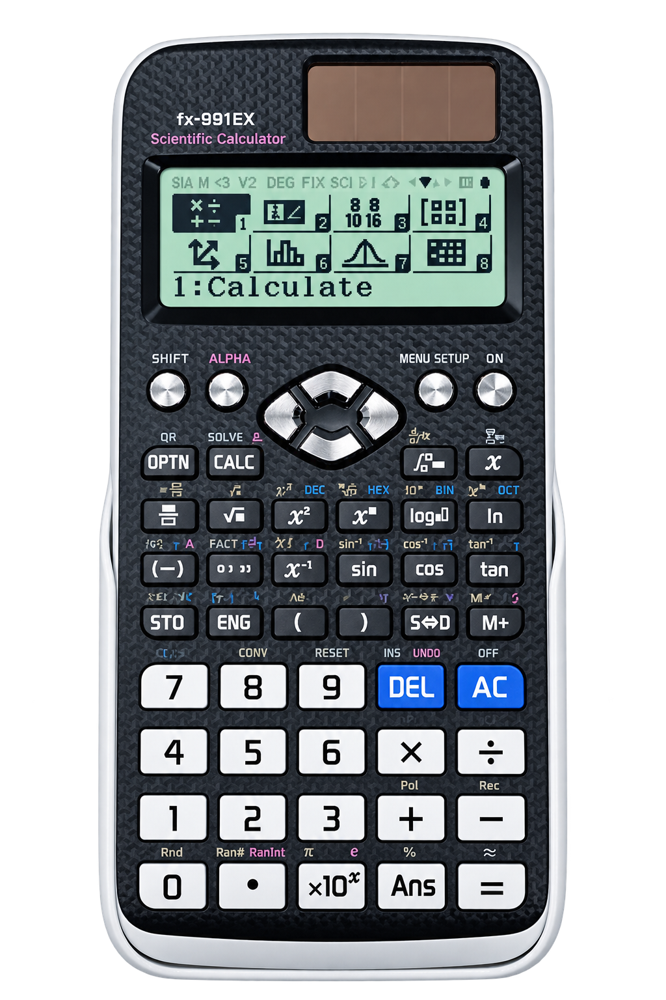
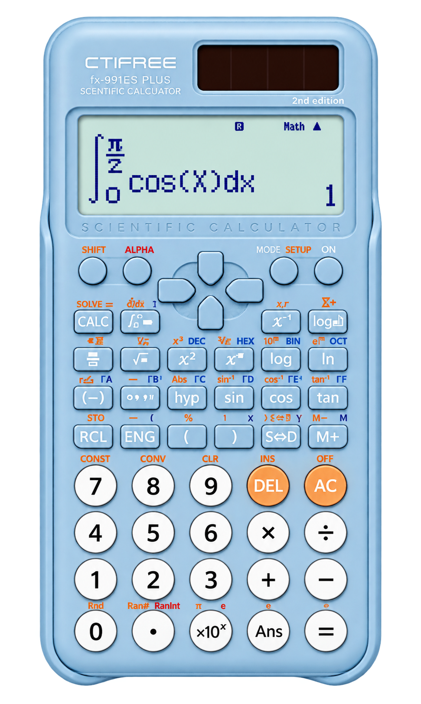
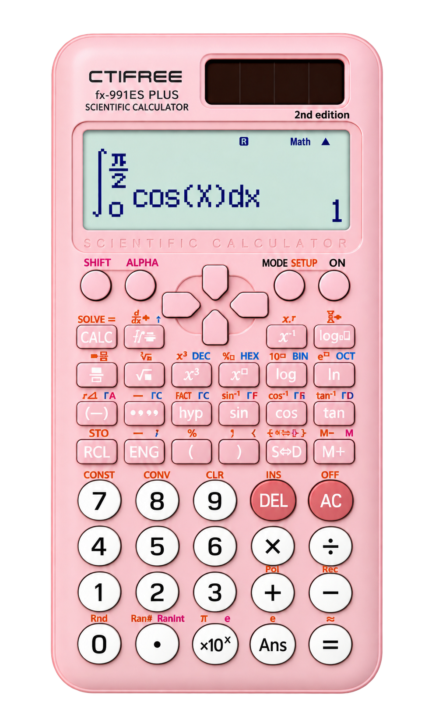
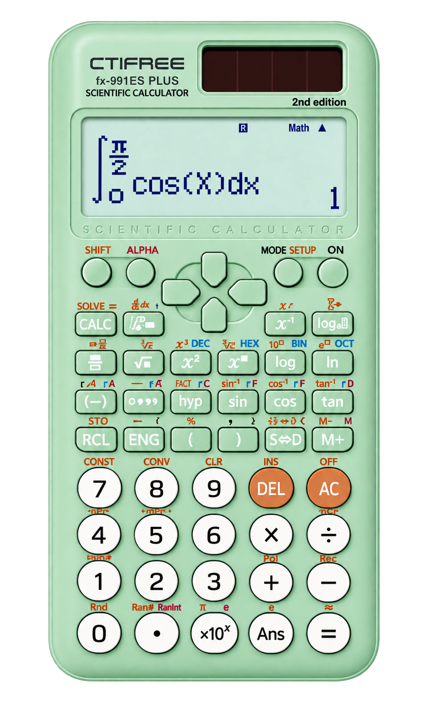
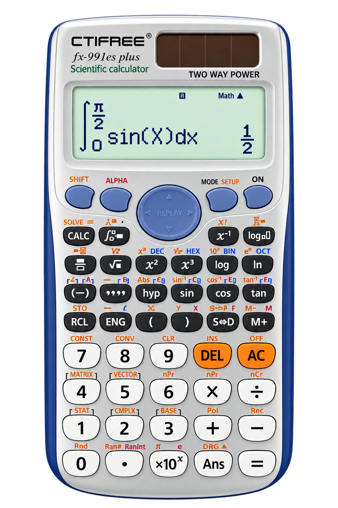

Bachillerato por Madurez Suficiente 02-2026
Adaptado por: Germán Quirós Quirós · Material original: Carlos Madrigal Gutiérrez
Instrucciones:
•Versión interactiva con las 60 preguntas.
•Las representaciones gráficas necesarias aparecen directamente dentro de cada pregunta.
•Para ganar esta prueba se requiere un mínimo de 42 respuestas correctas de un total de 60 preguntas.
•Puedes moverte entre preguntas, devolverte o avanzar y responder en el momento que creas necesario, eso sí, si el tiempo se agota la prueba se cierra y no te dejará seguir respondiendo.
•Es recomendable tener a la mano papel y lápiz para ir resolviendo los ejercicios de la prueba.
•Dispones de 3 horas para responder la prueba.
•Puedes utilizar calculadora científica no programable, acá te damos algunas recomendaciones tanto Casio como genéricas:
Marca Casio
MUY RECOMENDADA
*Casio fx-570LA X
*Casio fx-991LA X
*Casio fx-991LA X
RECOMENDADA
*Casio fx-570LA CW
*Casio fx-991LA CW
*Casio fx-991LA CW
NO RECOMENDADA
*Casio fx-570ES PLUS
*Casio FX-991ES PLUS
*Casio fx-570ES
*Casio FX-991ES
*Casio FX-991ES PLUS
*Casio fx-570ES
*Casio FX-991ES
Genéricas
MUY RECOMENDADA
NO RECOMENDADA





Resultado
0/60
0
Correctas
Correctas
0
Incorrectas
Incorrectas
0
Sin responder
Sin responder